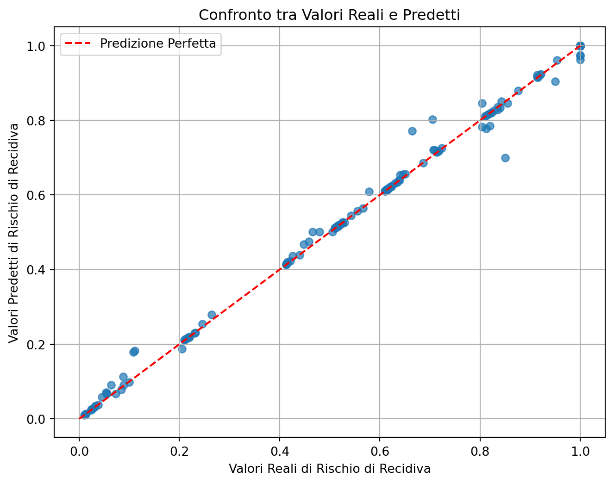
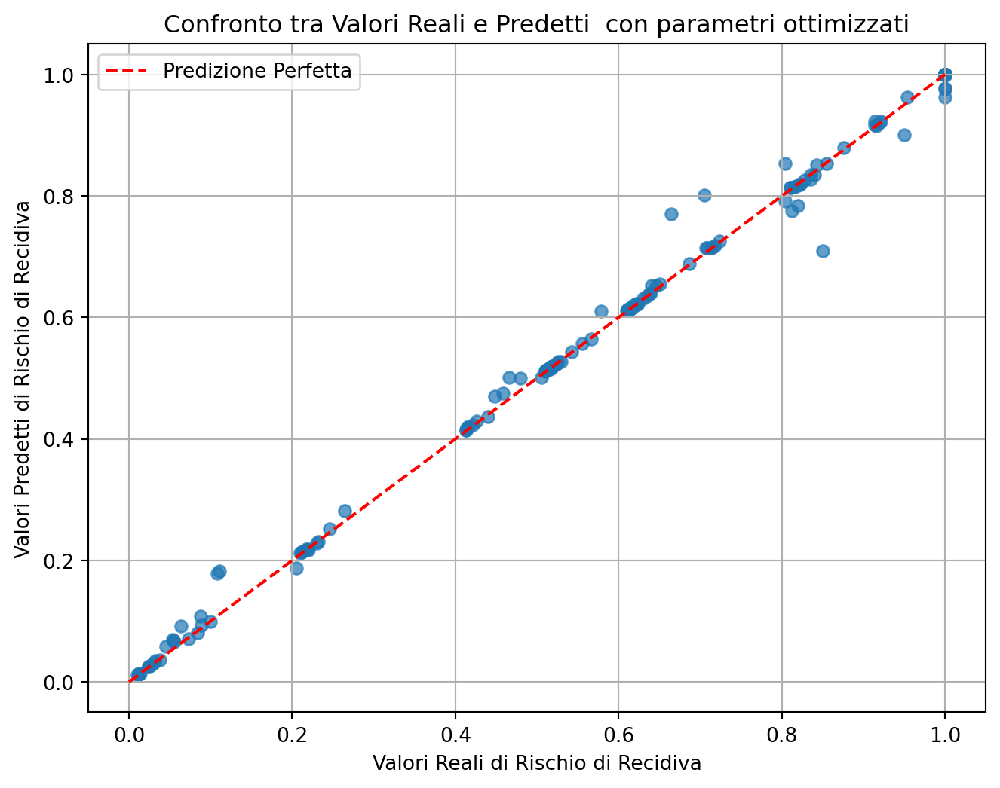

flowchart TD
A[1.Definizione del Problema] --> B(2.Raccolta dei Dati)
B --> C(3.Pre-elaborazione dei Dati)
C --> D(4.Divisione dei dati)
D --> E(5.Scelta dell'algoritmo)
E --> F(6.Addestramento del Modello)
F --> G{7valutazione risultati modello}
G -->|valutazione scarsa| H(8.Ottimizzazione parametri)
H --> F
G -->|9.valutazione buona| I(Deployment)
G -->|10.modello inadeguato|E
I --> L(11.Monitoraggio e manutenzione)
8 Algoritmi Predittivi
8.1 Introduzione
Gli algoritmi predittivi rappresentano un salto qualitativo rispetto agli algoritmi deterministici e probabilistici visti nei capitoli precedenti(Bishop 2006). Mentre gli algoritmi deterministici seguono regole ben definite per raggiungere una soluzione e gli algoritmi probabilistici utilizzano la probabilità per gestire l’incertezza, gli algoritmi predittivi apprendono dai dati per costruire modelli capaci di fare previsioni su eventi futuri.
Differenze principali:
- Deterministici:
- Producono lo stesso risultato ogni volta con gli stessi input.
- Non gestiscono incertezza o variabilità nei dati.
- Esempio: algoritmi di ricerca in grafi (DFS, BFS).
- Probabilistici:
- Includono l’incertezza nei calcoli.
- Basati su modelli matematici che stimano la probabilità di eventi.
- Esempio: filtri email o algoritmi Bayesiani.
- Predittivi:
- Si basano sull’apprendimento dai dati per costruire modelli.
- Adattano il comportamento in base a nuove informazioni.
- Possono gestire sia dati complessi che non lineari.
- Esempi: regressione lineare, reti neurali, support vector machine (SVM).
La vera forza degli algoritmi predittivi risiede nella loro capacità di migliorare le decisioni grazie all’apprendimento automatico. Possono affrontare scenari complessi dove non esistono regole fisse e dove i dati contengono rumore o incertezza. Gli algoritmi di predizione sono usati per creare modelli basati sull’ apprendedimento dei dati misurati o prodotti in un certo dominio applicativo al fine di fare previsioni su eventi futuri. Questi algoritmi possono essere classificati in diverse categorie in base al tipo di apprendimento, al tipo di output, e alle tecniche utilizzate (Murphy 2012):
Classificazione Basata sul Tipo di Apprendimento:
- Apprendimento Supervisionato: Gli algoritmi di apprendimento supervisionato richiedono un set di dati etichettato per l’addestramento. Utilizzano queste etichette per apprendere una funzione che mappa gli input agli output desiderati. Esempi includono la regressione lineare, gli alberi decisionali e le reti neurali¹.
- Apprendimento Non Supervisionato: Questi algoritmi scoprono pattern nascosti o strutture nei dati non etichettati. Tecniche comuni sono la clusterizzazione e la riduzione della dimensionalità¹.
- Apprendimento Semi-supervisionato e Rinforzato: Combinano elementi dei primi due tipi, utilizzando un piccolo set di dati etichettati insieme a una grande quantità di dati non etichettati, o apprendendo attraverso il rinforzo da un ambiente¹.
Classificazione Basata sul Tipo di Output:
- Classificazione: Quando l’output è una categoria, come “spam” o “non spam” in un filtro di posta elettronica, si parla di classificazione. Gli algoritmi di classificazione assegnano un’etichetta discreta a un’istanza di input¹.
- Regressione: Se l’output è un valore continuo, come il prezzo di una casa, si utilizza la regressione. Gli algoritmi di regressione prevedono un valore numerico basato sugli input¹.
- Ranking: Alcuni algoritmi ordinano gli elementi in base alla probabilità di appartenenza a una certa categoria o valore¹.
Classificazione Basata sulle Tecniche Utilizzate:
- Alberi Decisionali: Suddividono i dati in modo gerarchico basandosi su attributi specifici. Sono semplici da interpretare ma possono soffrire di overfitting².
- Random Forest: Una collezione di alberi decisionali che riduce il rischio di overfitting e gestisce meglio le variabili non correlate².
- Support Vector Machine (SVM): Trovano il miglior iperpiano che separa i dati in classi. Sono efficaci in spazi ad alta dimensionalità².
- K-Nearest Neighbors (K-NN): Classificano i nuovi dati in base alla classe più comune tra i vicini più prossimi. Sono semplici da implementare ma computazionalmente costosi².
- Reti Neurali: Sono modelli ispirati al funzionamento del cervello umano e possono catturare relazioni complesse nei dati¹.
Ogni algoritmo ha i suoi vantaggi e svantaggi, e la scelta dipende da vari fattori come la dimensione e la natura del dataset, la velocità richiesta, la trasparenza del modello e la capacità di gestire dati non lineari o mancanti. Ad esempio, gli alberi decisionali sono facili da interpretare ma possono soffrire di overfitting, mentre le SVM sono efficaci con dataset di piccole dimensioni ma meno efficienti con dataset molto grandi². L’agente deve imparare a riconoscere alcune configurazioni del suo percepito sulla base di un esperienza fatta su casi detti di training e deve essere in grado di riconoscere un nuovo percepito mai visto prima. Il percepito dell’agente è composto da dati, caratteristiche, che possono essere di tipo continuo (es. temperatura) o categoriali (es. colore rosso). I dati categoriali possono essere ordinabili (es. scarso, insufficiente, …) o non ordinabili (es. sesso) All’agente può essere chiesto di predire un dato continuo, nel qual caso si tratta di predizione o regressione, oppure può essere chiesto di predire un dato categoriale, nel qual caso si tratta di classificazione. Il processo di predizione segue il seguente flusso:
Nei prossimi paragrafi si presenterà una descrizione di ognuno di questi passi con la descrizione di un caso concreto di previsione della probabilità che un imputato in libertà vigilata commetta un nuovo reato. Si veda (Inc. 2018) per la descrizione di un applicativo di questo tipo in uso presso gli organi giudiziari negli Stati Uniti.
8.2 Definizione del Problema
Questp è il primo passo nel processo di predizione nell’intelligenza artificiale. Questa fase richiede una comprensione chiara e precisa dell’obiettivo che si desidera raggiungere con l’algoritmo di predizione. Che si tratti di prevedere il comportamento del consumatore, di diagnosticare malattie o di identificare frodi, è fondamentale stabilire parametri chiari e misurabili. La definizione del problema guida tutte le fasi successive, dalla raccolta dei dati alla scelta dell’algoritmo più adatto, assicurando che l’intero processo sia allineato con l’obiettivo finale. Un’accurata definizione del problema è la base per un modello predittivo efficace e funzionale. esempio pratico: Prevedere la probabilità che un imputato in libertà vigilata commetta un nuovo reato.
- Obiettivo: Stimare il rischio di recidiva.
- Dati necessari: Età, tipo di reato precedente, durata della libertà vigilata.
- Ipotesi: Alcuni fattori, come precedenti specifici, possono aumentare il rischio.
8.3 Raccolta dei Dati
Si tratta di acquisire informazioni rilevanti per il problema da risolvere. Questo processo non si limita alla mera acquisizione di dati grezzi; è una pratica strategica che trasforma questi dati in insights preziosi, capaci di guidare decisioni informate. I dati possono essere raccolti da fonti interne come database aziendali, o esterne come social media, sensori IoT (Internet of Things), o registri pubblici. La raccolta deve essere sistematica e organizzata, assicurando che i dati siano accurati, completi e aggiornati. È fondamentale anche considerare la privacy e la sicurezza dei dati durante la raccolta e l’elaborazione. Esempio Pratico: Raccolta di dati da archivi giudiziari, registri penitenziari e rapporti sociali.
- Fonti: Sentenze, relazioni degli assistenti sociali.
- Dati:
- Età: 25, 30, 35, 40, 45, 50, 55, 60, 65, 70
- Tipo di reato: furto, furto con violenza, omicidio, omicidio con violenza, …
- Durata della libertà vigilata: 1 mese, 3 mesi, 6 mesi, 1 anno, 2 anni, 3 anni, 4 anni, 5 anni, 6 anni, 7 anni
- …
- Risultato:
- Rischio di recidiva: 0.1, 0.2, 0.3, 0.4, 0.5, 0.6, 0.7, 0.8, 0.9, 1.0
- Considerazioni: Garantire la protezione dei dati personali e una raccolta dei dei dati bilanciata tra le classi sottostanti il fenomeno da studiare per evitare una eccessiva polarizzazione dei dati.
8.4 Pre-elaborazione dei Dati
Si prepara il dataset per garantire che l’algoritmo di machine learning funzioni in modo ottimale. Questo passo include diverse attività chiave:
Pulizia dei dati: correzione o rimozione di dati errati, corrotti, duplicati o non pertinenti. La pulizia assicura che il modello non apprenda da informazioni fuorvianti o irrilevanti.
Gestione dei valori mancanti: I dati incompleti sono comuni in molti dataset. La gestione dei valori mancanti può includere tecniche come l’imputazione, dove i valori mancanti sono sostituiti con stime, o l’eliminazione delle righe o colonne con dati mancanti.
Normalizzazione: scalatura dei dati in modo che attributi con ampi intervalli di valori non dominino quelli con intervalli più stretti. La normalizzazione è essenziale per algoritmi che sono sensibili alle scale dei dati, come la regressione lineare o le reti neurali.
Riduzione della dimensionalità: Tecniche come l’Analisi delle Componenti Principali (PCA) sono utilizzate per ridurre il numero di variabili nel dataset, mantenendo solo quelle più informative. Questo non solo semplifica il modello, ma può anche migliorare le prestazioni riducendo il rischio di overfitting. Esempio Pratico:
Pulizia: Rimuovere duplicati o incongruenze nei dati delle sentenze.
Gestione dei valori mancanti: Stimare dati mancanti, come la durata del procedimento.
Normalizzazione: Uniformare i dati, ad esempio convertendo valute in una stessa unità.
8.5 Divisione dei Dati
Si separa il dataset in due o più gruppi per diversi scopi: addestramento, validazione e test. Questa divisione serve per avere dati per valutare l’efficacia e la generalizzabilità del modello predittivo. Il set di addestramento è utilizzato per insegnare all’algoritmo a riconoscere i pattern nei dati. Il set di validazione, quando presente, aiuta a ottimizzare i parametri del modello e a prevenire l’overfitting. Infine, il set di test serve a valutare le prestazioni del modello su dati non visti durante l’addestramento, fornendo una stima dell’errore di generalizzazione. La proporzione della divisione può variare, ma una suddivisione comune è 70% per l’addestramento, 15% per la validazione e 15% per il test. È importante che la divisione dei dati sia rappresentativa dell’intero dataset, quindi tecniche come il campionamento stratificato possono essere utilizzate per mantenere la stessa distribuzione delle classi in ciascun set. Esempio Pratico:
- Divisione: 70% addestramento, 15% validazione, 15% test.
8.6 Scelta dell’ algoritmo
La scelta dell’algoritmo determina l’approccio con cui il modello analizzerà i dati e farà previsioni (James et al. 2013). La selezione dell’algoritmo dipende da vari fattori, tra cui il tipo di problema (classificazione, regressione, clustering), la natura dei dati, la dimensione del dataset e le risorse computazionali disponibili. Ad esempio, per problemi di classificazione, algoritmi come le reti neurali, le macchine a vettori di supporto (SVM) e gli alberi decisionali sono spesso utilizzati. Per la regressione, si possono considerare algoritmi come la regressione lineare, la regressione polinomiale o le reti neurali. È importante anche considerare la complessità dell’algoritmo: algoritmi più complessi possono offrire maggiore accuratezza, ma richiedono più tempo e risorse per l’addestramento. Esempio Pratico: In questo si potrebbe usare un algoritmo di regressione, come una Random Forest Regressor, per stimare la probabilità di recidiva.
8.7 Addestramento del modello
L’addestramento di un modello di machine learning è un processo iterativo che consiste nell’esporre un algoritmo a un ampio dataset di apprendimento, con l’obiettivo di insegnargli a riconoscere pattern e a fare predizioni accurate su nuovi dati (Hastie, Tibshirani, and Friedman 2009). La qualità e l’efficacia di un modello dipendono fortemente dalla scelta dell’algoritmo, dalla qualità dei dati e dalle tecniche di addestramento utilizzate. Modalità di apprendimento Esistono diverse modalità di apprendimento:
- Apprendimento supervisionato: Il modello viene addestrato su un dataset etichettato, dove ogni esempio è associato a una risposta corretta. L’obiettivo è insegnare al modello a mappare nuovi input alle loro rispettive etichette.
- Apprendimento non supervisionato: Il modello lavora con dati non etichettati, cercando di scoprire strutture nascoste nei dati, come gruppi di dati simili (clustering).
- Apprendimento semi-supervisionato: Combina elementi dei due approcci precedenti, utilizzando sia dati etichettati che non etichettati.
L’addestramento di modelli complessi richiede risorse computazionali significative. Le GPU e le TPU sono hardware specializzati che accelerano i calcoli necessari per l’addestramento di reti neurali profonde. Inoltre, sono necessari software specifici per definire le architetture delle reti neurali e gestire il processo di addestramento. Nel processo di addestramento occorre spesso intervenire manualmente per regolare i parametri del modello, come la dimensione del batch, la velocità di apprendimento e la regolarizzazione per evitare fenomeni come l’overfitting e l’underfitting:
- Overfitting: Si verifica quando il modello si adatta troppo ai dati di addestramento, perdendo la capacità di generalizzare a nuovi dati. In questo caso, il modello memorizza i dettagli specifici dei dati di addestramento invece di apprendere le caratteristiche generali.
- Underfitting: Si verifica quando il modello è troppo semplice per catturare la complessità dei dati. In questo caso, il modello non è in grado di apprendere le relazioni significative tra le variabili.
L’addestramento di modelli di machine learning solleva importanti questioni etiche. È fondamentale utilizzare dataset rappresentativi e bilanciati per evitare bias e discriminazioni. Inoltre, è necessario considerare le potenziali conseguenze negative dell’utilizzo di modelli in contesti reali, come la privacy e la sicurezza dei dati. Esempio Pratico: Nel caso in studio si tratterà di addestrare il modello scelto con dati storici su imputati e loro comportamenti post-processo.
8.8 Valutazione del modello
La valutazione del modello è una fase cruciale nel processo di sviluppo di un modello di machine learning, poiché consente di misurare la capacità del modello addestrato di generalizzare a nuovi dati, ovvero di fare predizioni accurate su esempi che non ha mai visto durante l’addestramento. Le metriche di valutazione variano a seconda del tipo di problema:
- problemi di classificazione, si utilizzano metriche come: Matrice di confusione: una tabella che mostra il numero di casi classificati correttamente e erroneamente in ogni classe.
- Accuratezza: misura la percentuale di casi classificati correttamente.
- Precisione: misura la percentuale di veri positivi (cioè quei casi che effettivamente appartengono alla classe positiva) tra i casi classificati come positivi.
- Richiamo: misura la percentuale di veri positivi tra tutti i casi positivi reali.
- F1-score: misura la media armonica tra precisione e richiamo.
- Curva ROC (Receiver Operating Characteristic) con l’area sotto la curva (AUC): misura la capacità del modello di distinguere correttamente tra le classi.
- problemi di regressione, si utilizzano metriche come:
- Errore quadratico medio (MSE): misura la differenza media quadratica tra i valori predetti dal modello e i valori reali.
- Coefficiente di determinazione (R²): misura la percentuale di variazione dei valori predetti rispetto ai valori reali.
Analisi dei risultati L’analisi dei risultati della valutazione permette di identificare eventuali problemi come l’overfitting o l’underfitting. L’overfitting si verifica quando il modello si adatta troppo ai dati di addestramento, perdendo la capacità di generalizzare a nuovi dati. L’underfitting si verifica quando il modello è troppo semplice e non riesce a catturare la complessità dei dati. Esempio pratico: nel caso in studio di modello di machine learning addestrato per predire la probabilità di recidività di un reo in base ai dati raccolti sullo stesso. Dopo l’addestramento, il modello viene valutato su un dataset di test che contiene informazioni su nuovi reati. Utilizzando la Cross-validation, calcolando metriche come l’accuratezza e il richiamo, possiamo valutare l’affidabilità delle predizioni del modello. Un’alta accuratezza indica che il modello è generalmente corretto nelle sue previsioni, mentre un alto richiamo indica che il modello è bravo a identificare i reati che effettivamente si sono verificati.
8.9 Ottimizzazione degli iperparametri
L’ottimizzazione degli iperparametri è un processo iterativo che consiste nel regolare i parametri esterni al modello che non vengono appresi durante l’addestramento, ma che influenzano significativamente le sue prestazioni. Esempi di iperparametri includono il tasso di apprendimento, la profondità di un albero decisionale o il numero di neuroni in una rete neurale. L’obiettivo dell’ottimizzazione è individuare la combinazione di iperparametri che massimizza le prestazioni del modello su un dataset di valutazione indipendente. Per raggiungere questo obiettivo, si utilizzano diverse tecniche, tra cui:
- Ricerca a griglia: Esplora sistematicamente tutte le possibili combinazioni di iperparametri all’interno di un intervallo specificato.
- Ricerca casuale: Seleziona casualmente combinazioni di iperparametri, potendo essere più efficiente della ricerca a griglia in spazi di ricerca ampi.
- Ottimizzazione bayesiana: Utilizza modelli probabilistici per guidare la ricerca verso le regioni dello spazio degli iperparametri più promettenti.
Per valutare l’efficacia delle diverse combinazioni di iperparametri, si ricorre alla validazione incrociata. Questa tecnica consiste nel suddividere il dataset in più parti, addestrando il modello su una parte e valutandolo sulle altre. Ripetendo questo processo multiple volte, si ottiene una stima più robusta delle prestazioni del modello. Tecniche come l’early stopping possono essere utilizzate per migliorare ulteriormente il processo di ottimizzazione. L’early stopping consiste nell’interrompere l’addestramento quando le prestazioni del modello sul dataset di convalida iniziano a peggiorare, evitando così l’overfitting.
Esempio pratico: Nel caso in studio si procederà a regolare i parametri della Random Forest Regressor, come il numero di alberi (n_estimators) o la profondità massima degli alberi (max_depth), per migliorare le prestazioni. Una possibile metodologia di ottimizzazione potrebbe essere di utilizzare una ricerca a griglia per identificare i migliori iperparametri. Ad esempio, testare diversi valori di n_estimators (100, 200, 500) e max_depth (5, 10, 15). La validazione incrociata può essere utilizzata per valutare le prestazioni del modello su diversi set di dati di addestramento e convalida.
8.10 Deployment
Il deployment è la fase finale del processo di predizione, in cui il modello addestrato e ottimizzato viene messo in produzione per essere utilizzato in applicazioni reali. Questa fase implica la preparazione del modello per l’integrazione con sistemi esistenti, garantendo che sia scalabile, affidabile e sicuro. Il deployment può avvenire su diverse piattaforme, come server locali, cloud o dispositivi edge (dispositivi periferici che elaborano i dati vicino alla fonte, riducendo la latenza e il carico sui server centrali), a seconda delle esigenze dell’applicazione. È importante notare che l’hardware necessario per il deployment è diverso da quello utilizzato per l’addestramento. Durante l’addestramento, sono necessarie risorse computazionali elevate, come GPU o TPU, per gestire i complessi calcoli e l’ottimizzazione dei parametri del modello. Tuttavia, una volta che il modello è addestrato, il deployment richiede meno potenza computazionale, poiché il modello deve solo eseguire previsioni basate sui dati in ingresso. Questo permette di utilizzare hardware meno potente e più economico per il deployment, riducendo i costi operativi.
Sfide del deployment:
- Scalabilità: Il sistema di deployment deve essere in grado di gestire un aumento del carico di lavoro e di scalare in modo elastico per soddisfare le esigenze dell’applicazione.
- Affidabilità: Il modello deve essere disponibile e funzionante in modo continuo, minimizzando i tempi di fermo e garantendo la qualità delle previsioni.
- Sicurezza: È fondamentale proteggere il modello e i dati sensibili da accessi non autorizzati e attacchi informatici.
esempio pratico: nel caso in studio si procederà a creare un’applicazione web che consenta agli utenti di inserire i dati di input e ricevere le previsioni del modello. Questa applicazione sarà ospitata su un server web e sarà accessibile tramite un’interfaccia web nella quale sarà necessario implementare un sistema di autenticazione per garantire che solo gli utenti autorizzati possano accedere al modello. Se si prevede che il modello sarà utilizzato in un’applicazione mobile, sarà necessario sviluppare un’interfaccia utente per dispositivi mobili che consenta agli utenti di inserire i dati di input e ricevere le previsioni. Per garantire prestazioni elevate, il modello può essere deployato su un server cloud scalabile, come AWS (Amazon Web Services) o GCP (Google Cloud Platform).Monitorando le prestazioni del modello, è possibile fare aggiustamenti e aggiornamenti per mantenere alta la qualità delle previsioni.
8.11 Monitoraggio e manutenzione
Il monitoraggio e la manutenzione sono attività cruciali nel ciclo di vita di un modello di predizione, volte a garantire che il modello rimanga accurato e affidabile nel tempo(Kuhn and Johnson 2013). Dopo il deployment, è essenziale monitorare continuamente le prestazioni del modello per rilevare eventuali degradi dovuti a cambiamenti nei dati o nel contesto operativo. Questo può includere il monitoraggio di indicatori di degrado come:
- Aumento dell’errore di previsione: Se il modello inizia a fare più errori nelle previsioni rispetto a prima, potrebbe essere un segnale di degrado. Questo può essere misurato attraverso metriche come l’errore quadratico medio (MSE) per i modelli di regressione o l’accuratezza per i modelli di classificazione.
- Diminuzione dell’accuratezza: Un calo nell’accuratezza complessiva del modello indica che le previsioni non sono più affidabili come in passato.
- Aumento dei falsi positivi/negativi: Per i modelli di classificazione, un aumento dei falsi positivi (previsioni errate di eventi positivi) o dei falsi negativi (previsioni errate di eventi negativi) può indicare che il modello non sta più funzionando correttamente.
- Cambiamenti nelle distribuzioni dei dati: Se i dati in ingresso cambiano significativamente rispetto ai dati su cui il modello è stato addestrato, il modello potrebbe non essere più in grado di generalizzare correttamente. Questo può essere monitorato attraverso tecniche di drift detection.
- Aumento del tempo di risposta: Se il modello impiega più tempo per fare previsioni, potrebbe essere un segnale che qualcosa non va, come un sovraccarico computazionale o inefficienze nel codice.
La manutenzione del modello può comportare aggiornamenti periodici, riaddestramento con nuovi dati e ottimizzazioni per adattarsi a nuove condizioni. Inoltre, è importante implementare sistemi di allerta per notificare tempestivamente eventuali problemi. La manutenzione preventiva e correttiva aiuta a mantenere il modello efficiente e a evitare errori significativi che potrebbero influenzare le decisioni basate sulle sue previsioni. Esempio pratico: Nel caso in studio, il monitoraggio del modello di previsione potrebbero includere la verifica regolare dell’MSE e del’R² su nuovi dati. Mentre la manutenzione potrebbe includere l’aggiornamento periodico, ad esempio ogni 6 mesi, del modello con nuovi dati per garantire prestazioni ottimali.
8.12 Laboratorio Python
8.12.1 Esperimento 1: Predizione della recidiva parte A: creazione di un dataset di addestramento e test simulato
Vediamo un esempio in Python che implementa il processo predittivo per il caso giuridico di previsione della probabilità di recidiva utilizzando una Random Forest Regressor. Questo esempio utilizza diviso in 3 parti si basa su dati simulati per illustrare il flusso completo, dalla generazione dei dati fino alla valutazione del modello.
Caution
Se non è stato già fatto, installare le librerie necessarie con il seguente comando da eseguire nella shell:
pip install numpy pandas sklearn matplotlibIn questa primo esperimento l’obiettivo principale è generare dati dall’aspetto realistico su persone che sono in libertà vigilata (rilascio supervisionato dopo un reato) e calcolare il loro rischio di recidiva. Questi dati simulati verranno successivamente utilizzati per addestrare e testare un modello predittivo, che è una pratica comune nel machine learning quando si vuole sperimentare prima di utilizzare dati reali e sensibili. Il codice non riceve input esterni dagli utenti. Invece, genera i propri dati utilizzando la generazione di numeri casuali. Tuttavia, utilizza diversi parametri predefiniti per controllare la simulazione:
- Numero di campioni (1000 persone)
- Fasce d’età (da 18 a 70 anni)
- Durata della libertà vigilata (da 1 a 60 mesi)
- Tipi di reati precedenti (furto, reato violento, omicidio)
- Stato lavorativo (lavoro stabile o no)
- Supporto familiare (presente o assente)
Il codice segue una sequenza chiara: genera caratteristiche individuali casualmente, poi le combina usando una formula ponderata per calcolare il rischio. Un passaggio cruciale è il “clipping” del punteggio di rischio finale per assicurarsi che rimanga tra 0 e 1, poiché le probabilità non possono essere negative o maggiori del 100%.
Il seed casuale (impostato a 42) garantisce che ogni volta che esegui questo codice, ottieni esattamente gli stessi dati “casuali”, il che è importante per esperimenti scientifici riproducibili. Infine, tutti i dati generati vengono organizzati in un DataFrame pandas (pensalo come un foglio di calcolo digitale) e visualizza le prime righe così puoi vedere com’è fatto il dataset simulato.
Questo approccio permette a ricercatori e sviluppatori di testare i loro algoritmi di predizione su dati realistici senza problemi di privacy, prima di applicarli a veri fascicoli giudiziari.
import numpy as np
import pandas as pd
# Simulazione dei dati con relazioni realistiche
np.random.seed(42)
num_samples = 1000
# Generazione delle variabili
eta = np.random.randint(18, 70, size=num_samples)
durata_liberta_vigilata = np.random.randint(1, 60, size=num_samples) # Durata in mesi
reato_precedente = np.random.choice([0, 1, 2], size=num_samples, p=[0.5, 0.3, 0.2]) # Furto, violenza privata, omicidio
lavoro_stabile = np.random.choice([0, 1], size=num_samples, p=[0.6, 0.4])
supporto_familiare = np.random.choice([0, 1], size=num_samples, p=[0.4, 0.6])
# Calcolo del rischio di recidiva basato su regole
rischio_recidiva = (
0.6 * (1 - lavoro_stabile) +
0.5 * (1 - supporto_familiare) +
0.4 * (reato_precedente / 2) +
0.3 * (1 / durata_liberta_vigilata) +
0.2 * (1 / (eta - 17))
)
rischio_recidiva = np.clip(rischio_recidiva, 0, 1) # Limitare il rischio tra 0 e 1
# Creazione del DataFrame
data = {
'eta': eta,
'durata_liberta_vigilata': durata_liberta_vigilata,
'reato_precedente': reato_precedente,
'lavoro_stabile': lavoro_stabile,
'supporto_familiare': supporto_familiare,
'rischio_recidiva': rischio_recidiva
}
df = pd.DataFrame(data)
# Visualizzazione iniziale dei dati
print("Esempio di dati simulati:")
print(df.head())Esempio di dati simulati:
eta durata_liberta_vigilata reato_precedente lavoro_stabile \
0 56 35 2 0
1 69 51 1 0
2 46 15 0 1
3 32 25 1 0
4 60 55 1 1
supporto_familiare rischio_recidiva
0 0 1.000000
1 0 1.000000
2 0 0.526897
3 0 1.000000
4 0 0.710106 Si noti che i dati generati sono memorizzati in una struttura dati chiamata Dataframe. Si tratta di una particolare struttura dati fornita dalla libreria pandas di Python che rappresenta essenzialmente una tabella, molto simile a un foglio di calcolo di Excel o a una tabella di un database. Possiamo immaginarla come una griglia con righe e colonne: ogni riga rappresenta un record (in questo caso, una persona) e ogni colonna rappresenta una caratteristica o variabile (come età, tipo di reato, ecc.). Questa struttura dati è diventata molto popolare nel mondo del machine learning perché è molto flessibile e può gestire una grande quantità di dati in modo efficiente. Con questa struttura dati, è possibile eseguire operazioni come la selezione di righe o colonne specifiche, la manipolazione dei dati, la creazione di nuovi dati basati su quelli esistenti e molto altro. Inoltre, le librerie di machine learning come scikit-learn richiedono spesso che i dati siano organizzati in questo formato per poter essere utilizzati.
8.12.2 Esperimento 2: Predizione della recidiva parte B: Addestramento e test del modello
In questo esperimento, il modello Random Forest Regressor viene addestrato utilizzando i dati simulati e quindi viene utilizzato per fare previsioni sui dati di test. Per prima cosa, i dati sono divisi in input (X) e output (y), dove X contiene tutte le caratteristiche (ad esempio, età, tipo di reato precedente, ecc.) e y contiene il rischio di recidiva. Successivamente, i dati sono divisi in set di addestramento e test utilizzando la funzione train_test_split di scikit-learn. Il modello Random Forest Regressor viene addestrato utilizzando i dati di addestramento e quindi viene utilizzato per fare previsioni sui dati di test.
from sklearn.model_selection import train_test_split
from sklearn.ensemble import RandomForestRegressor
from sklearn.metrics import mean_squared_error, r2_score
# Divisione dei dati in input (X) e output (y)
X = df.drop('rischio_recidiva', axis=1)
y = df['rischio_recidiva']
# Divisione in training e test set
X_train, X_test, y_train, y_test = train_test_split(X, y, test_size=0.2, random_state=42)
# Creazione e addestramento del modello Random Forest Regressor
rf_model = RandomForestRegressor(random_state=42)
rf_model.fit(X_train, y_train)
# Predizione sui dati di test
y_pred = rf_model.predict(X_test)
# Valutazione del modello
mse = mean_squared_error(y_test, y_pred)
r2 = r2_score(y_test, y_pred)
print("\nRisultati del modello:")
print(f"Mean Squared Error (MSE): {mse:.4f}")
print(f"R^2 Score: {r2:.4f}")
Risultati del modello:
Mean Squared Error (MSE): 0.0004
R^2 Score: 0.99668.12.3 Esperimento 3: Predizione della recidiva parte C: Ottimizzazione degli iperparametri del modello e visualizzazione dei risultati
In questa parte dell’esperimento, viene visualizzato un grafico per confrontare i valori reali di rischio di recidiva con i valori predetti dal modello. Inoltre, viene utilizzato GridSearchCV per ottimizzare gli iperparametri del modello Random Forest Regressor. Questo processo di ottimizzazione è importante perché aiuta a trovare la combinazione migliore di parametri che migliorano le prestazioni del modello. Infine, i risultati dell’ottimizzazione vengono visualizzati in un grafico.
import matplotlib.pyplot as plt
from sklearn.model_selection import GridSearchCV
# Visualizzazione dei risultati
plt.figure(figsize=(8, 6))
plt.scatter(y_test, y_pred, alpha=0.7)
plt.plot([0, 1], [0, 1], '--', color='red', label='Predizione Perfetta')
plt.xlabel("Valori Reali di Rischio di Recidiva")
plt.ylabel("Valori Predetti di Rischio di Recidiva")
plt.title("Confronto tra Valori Reali e Predetti")
plt.legend()
plt.grid()
plt.show()
# Ottimizzazione degli iperparametri con GridSearchCV
param_grid = {
'n_estimators': [100, 200, 300],
'max_depth': [5, 10, 15],
'min_samples_split': [2, 5, 10]
}
grid_search = GridSearchCV(estimator=rf_model, param_grid=param_grid, cv=5, scoring='neg_mean_squared_error', verbose=1, n_jobs=-1)
grid_search.fit(X_train, y_train)
print("\nMigliori parametri trovati con GridSearchCV:")
print(grid_search.best_params_)
# Addestramento del modello ottimizzato
best_rf_model = grid_search.best_estimator_
# Predizione e valutazione con il modello ottimizzato
y_pred_optimized = best_rf_model.predict(X_test)
optimized_mse = mean_squared_error(y_test, y_pred_optimized)
optimized_r2 = r2_score(y_test, y_pred_optimized)
# Visualizzazione dei risultati
plt.figure(figsize=(8, 6))
plt.scatter(y_test, y_pred_optimized, alpha=0.7)
plt.plot([0, 1], [0, 1], '--', color='red', label='Predizione Perfetta')
plt.xlabel("Valori Reali di Rischio di Recidiva")
plt.ylabel("Valori Predetti di Rischio di Recidiva")
plt.title("Confronto tra Valori Reali e Predetti con parametri ottimizzati")
plt.legend()
plt.grid()
plt.show()
print("\nRisultati del modello ottimizzato:")
print(f"Mean Squared Error (MSE): {optimized_mse:.4f}")
print(f"R^2 Score: {optimized_r2:.4f}")
Fitting 5 folds for each of 27 candidates, totalling 135 fits
Migliori parametri trovati con GridSearchCV:
{'max_depth': 10, 'min_samples_split': 2, 'n_estimators': 300}
Risultati del modello ottimizzato:
Mean Squared Error (MSE): 0.0003
R^2 Score: 0.99678.13 Esercizi
8.13.1 Esercizio 1: Analisi delle variabili significative
Obiettivo: Identificare le variabili più importanti nel determinare il rischio di recidiva.
Supponendo di avere un modello di Random Forest Regressor già addestrato con i dati di rischio di recidiva:
- Utilizza la funzione
feature_importances_della Random Forest per identificare l’importanza relativa delle variabili di input. - Ordina le variabili in base alla loro importanza decrescente.
- Rispondi alle seguenti domande:
- Quali sono le tre variabili più significative?
- Come pensi che queste variabili influenzino il rischio di recidiva?
8.13.2 Esercizio 2: Creazione di un dataset realistico
Obiettivo: Simulare un dataset che rifletta il comportamento reale di imputati in libertà vigilata.
- Simula un dataset di almeno 500 imputati includendo le seguenti variabili:
- Età.
- Tipo di reato precedente (furto, violenza, omicidio).
- Durata della libertà vigilata (in mesi).
- Presenza di un lavoro stabile (sì/no).
- Supporto familiare (sì/no).
- Assegna il rischio di recidiva utilizzando una funzione che tenga conto delle variabili sopra indicate (ad esempio, un punteggio più alto per imputati senza lavoro stabile o con reati più gravi).
- Visualizza la distribuzione del rischio di recidiva nel dataset utilizzando un grafico.
8.13.3 Esercizio 3: Valutazione di un modello predittivo
Obiettivo: Valutare le prestazioni di un modello predittivo per il rischio di recidiva.
- Addestra un modello di Random Forest Regressor utilizzando un dataset simulato.
- Dividi i dati in training e test set con una proporzione 80/20.
- Valuta il modello utilizzando le seguenti metriche:
- Mean Squared Error (MSE).
- R² Score.
- Interpreta i risultati:
- Il modello è efficace? Quali sono i possibili miglioramenti?
- Quali interventi (ad esempio, ottimizzazione degli iperparametri) potresti fare per migliorare le prestazioni?
Bishop, Christopher M. 2006. Pattern Recognition and Machine Learning. Springer.
Hastie, Trevor, Robert Tibshirani, and Jerome Friedman. 2009. The Elements of Statistical Learning: Data Mining, Inference, and Prediction. Springer.
Inc., Northpointe. 2018. Correctional Offender Management Profiling for Alternative Sanctions (COMPAS). https://bja.ojp.gov/sites/g/files/xyckuh186/files/media/document/compas.pdf.
James, Gareth, Daniela Witten, Trevor Hastie, and Robert Tibshirani. 2013. An Introduction to Statistical Learning. Springer.
Kuhn, Max, and Kjell Johnson. 2013. Applied Predictive Modeling. Springer.
Murphy, Kevin P. 2012. Machine Learning: A Probabilistic Perspective. MIT Press.